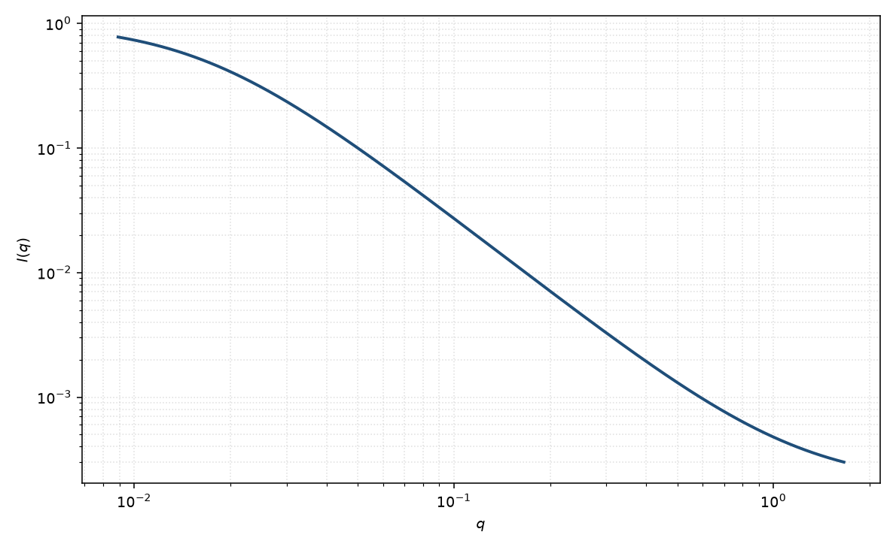

洛伦兹
Lorentz
适用场景
临界涨落、半稀释溶液或凝胶的热涨落常用 Ornstein–Zernike / 洛伦兹型：$I\sim 1/(1+\xi^2 q^2)$。典型对象：近临界二元混合物、聚合物溶液的浓度涨落、以及只需要一个关联长度的筛选拟合。
若高 $q$ 掉得比 $q^{-2}$ 更快，应改用 DAB（$q^{-4}$ 尾）或带指数 $m$ 的关联长度模型。出现相关峰时改用宽峰或 Teubner–Strey。
物理图像
指数衰减关联 $\gamma(r)\sim e^{-r/\xi}/r$ 的三维 Fourier 变换是洛伦兹函数。$\xi$ 是涨落的关联长度，$I(0)$ 随 $\xi$ 增大（趋近临界点）。
这不是粒子形式因子：没有固定外形。取向平均已经包含在各向同性 OZ 里。磁性临界涨落可以有自己的 $\xi$。
示意图

核心公式
出发点
临界浓度涨落的 Ornstein–Zernike 相关在三维中取 Yukawa 形：$\gamma(r)\propto\mathrm{e}^{-r/\xi}/r$。强度是它的 Fourier 变换。这不是粒子外形，只是一个关联长度 $\xi$。
推导
各向同性三维变换
$$I(q)\propto 4\pi\int_0^\infty r^2\cdot\frac{\mathrm{e}^{-r/\xi}}{r}\cdot\frac{\sin(qr)}{qr}\,\mathrm{d}r=\frac{4\pi}{q}\int_0^\infty\mathrm{e}^{-r/\xi}\sin(qr)\,\mathrm{d}r.$$积分 $\int_0^\infty\mathrm{e}^{-ar}\sin(br)\,\mathrm{d}r=b/(a^2+b^2)$，其中 $a=1/\xi$、$b=q$，得到 $\propto 1/(q^2+\xi^{-2})$。归一化到 $I(0)$：
$$I(q)=\frac{I(0)}{1+\xi^2 q^2}+B.$$同一结果来自 Landau 展开只保留 $a+c q^2$：$\langle\lvert\phi_q\rvert^2\rangle\propto 1/(a+c q^2)$，关联长度 $\xi=\sqrt{c/a}$。
低 $q$ 与渐近
低 $q$：$I=I(0)\,(1-\xi^2 q^2+O(q^4))$，等效 Guinier 半径满足 $R_g^2=3\xi^2$（仅在此二次展开意义上）。高 $q$ 渐近 $I\sim I(0)/(\xi^2 q^2)$，即 $q^{-2}$，比锐利界面的 $q^{-4}$ 慢。
若尾已是 $q^{-4}$，相关应改用 $\mathrm{e}^{-r/\xi}$（DAB）而不是 $\mathrm{e}^{-r/\xi}/r$。
参数表
| 参数 | 符号 | 含义 | 单位 | 典型范围 |
|---|---|---|---|---|
| 关联长度 | $\xi$ | 指数关联的衰减长度 | Å | 10–1000 Å |
| 前向幅度 | $I(0)$ | 涨落强度 | 与强度单位一致 | 近临界时增大 |
| 标度 / 本底 | $\mathrm{scale}$, $B$ | 前置因子与常数本底 | 与强度单位一致 | 实验相关 |
拟合注意
取向：各向同性 OZ 假定涨落无优方向。剪切或液晶中应使用各向异性 $\xi_\parallel,\xi_\perp$。
多分散：这里的“多分散”表现为 $\xi$ 的分布，会把洛伦兹尾变陡或变缓。磁性临界散射的 $\xi$ 与核浓度涨落不必相同。
可辨识性：$I(0)$、$\xi$ 与 $B$ 在窄 $q$ 相关。高 $q$ 若已是 $q^{-4}$，不要用洛伦兹硬撑；那是 DAB 或 Porod。
相近模型
- Debye–Anderson–Brumberger — 关联 $\exp(-r/\xi)$，尾为 $q^{-4}$。
- 关联长度 — 把指数改成可调 $m$ 的经验式。
- 双洛伦兹 — 两个关联长度叠加。
参考文献
- Ornstein, L. S.; Zernike, F. Accidental deviations of density and opalescence at the critical point of a single substance. Proc. Acad. Sci. Amsterdam 1914, 17, 793–806.
- Guinier, A.; Fournet, G. Small-Angle Scattering of X-rays. Wiley: New York, 1955.